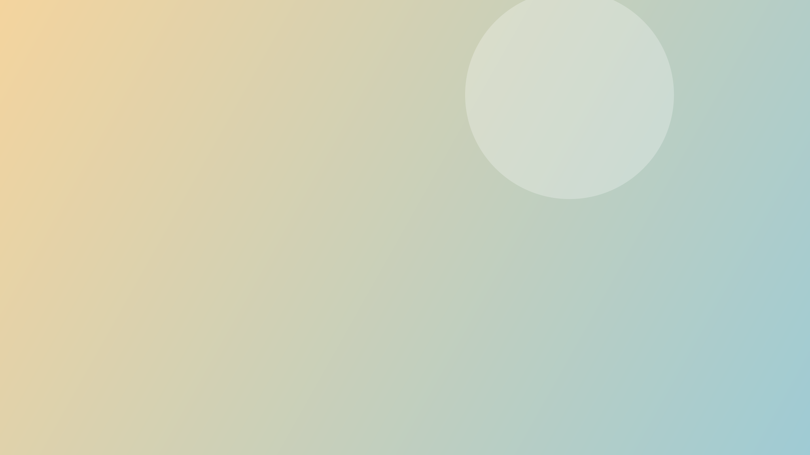
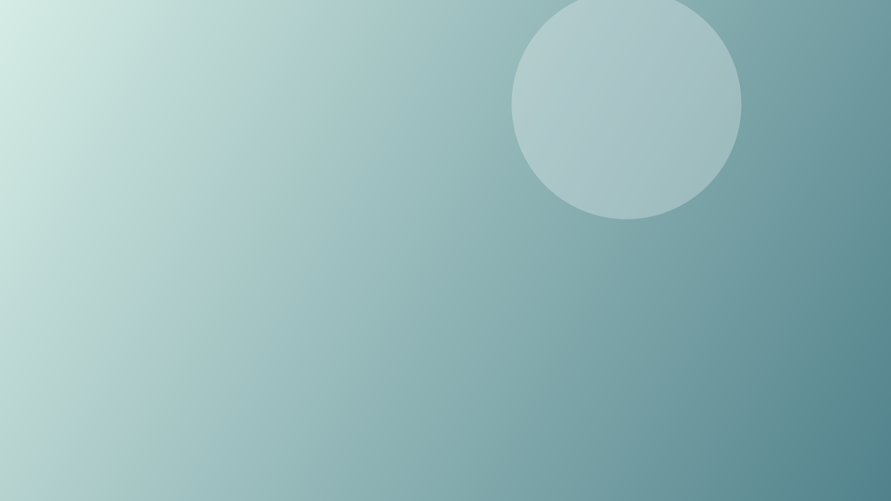
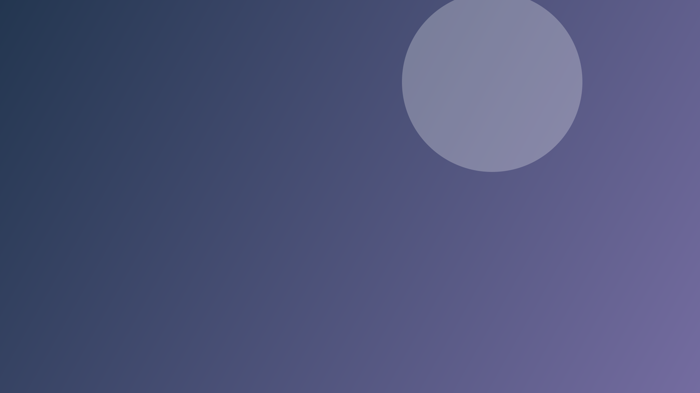
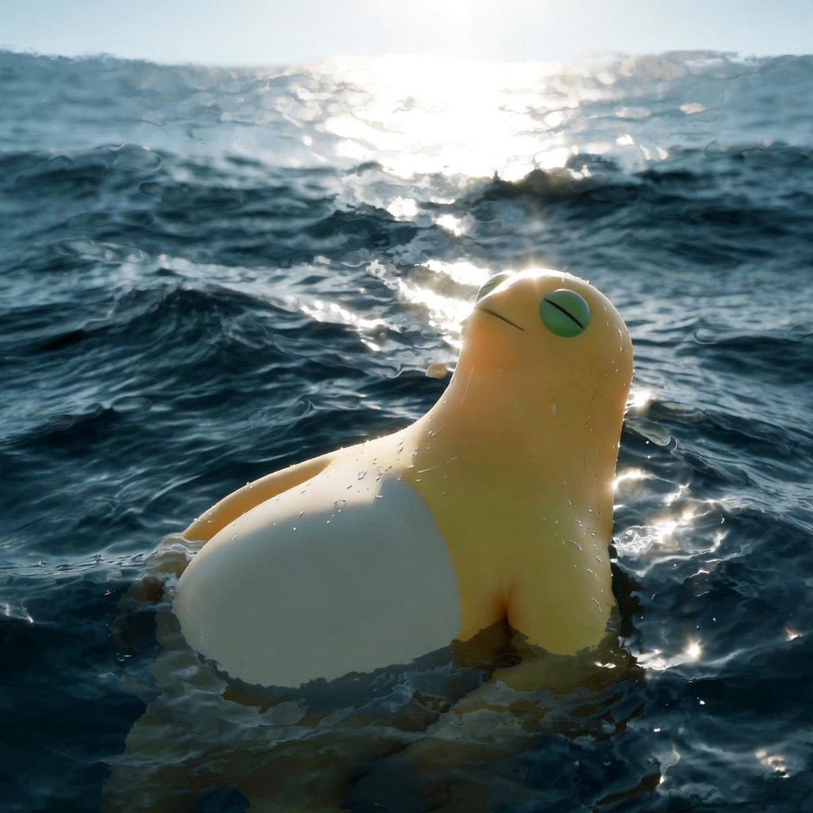
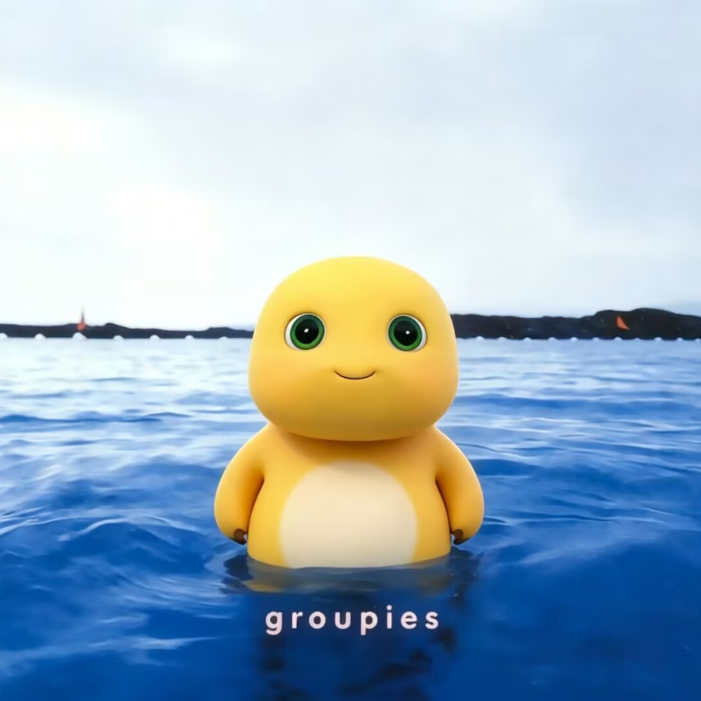

东南大学 · 生物科学与医学工程学院
共 23 个常用站点 持续更新
分享好用的 GitHub 项目、脚本和工具链接。欢迎投稿展示。
加入你的常用入口，刷新后仍会保留在当前浏览器。
选择后立即生效，刷新后仍会保留。





正在读取已保存的壁纸…
可一次选择多张 JPG、PNG、WebP，每张不超过 20 MB。点击缩略图切换，刷新或下次打开仍会保留；仅保存在当前浏览器，清除网站数据会移除壁纸。